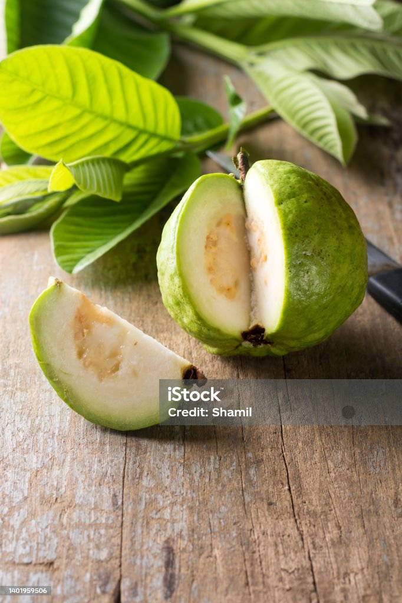

Guava is a sweet, fragrant tropical fruit known for its soft
texture and refreshing flavor. It is believed to have originated
in Central America, particularly in regions of Mexico and
surrounding areas, before spreading to South America, the Caribbean,
and Asia. Today, guava is widely grown in countries like India,
Brazil, Thailand, and Indonesia. Nutritionally, guava is considered
one of the healthiest fruits due to its extremely high vitamin C
content—often higher than oranges. It is also rich in fiber, antioxidants,
potassium, and vitamin A. These nutrients support immunity, digestion,
skin health, and overall wellness, making guava a truly powerful
fruit.